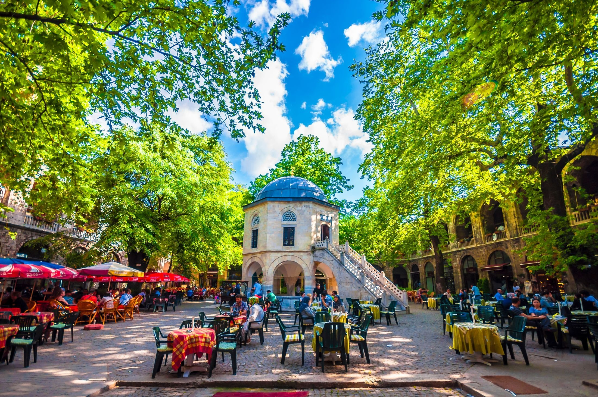
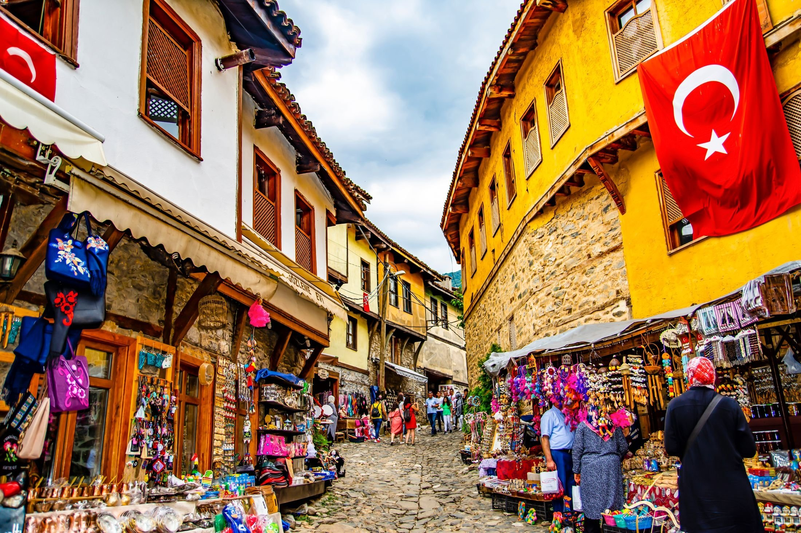

GIORNO 4
Escursione a Bursa
|

Cari ospiti, oggi ci allontaneremo dalla frenesia della città per una giornata di scoperta e avventura a Bursa, una città storica situata ai piedi del monte Uludağ. Qui, tra le antiche moschee e i bazar tradizionali, avremo l'opportunità di immergerci nella cultura e nella storia della Turchia ottomana, scoprendo i segreti e le meraviglie di questa città millenaria. |
Attraverso una visita guidata, esploreremo i luoghi più significativi di Bursa, tra cui il Mausoleo Verde, un capolavoro dell'architettura ottomana, e il Gran Bazar, un vivace mercato dove è possibile fare shopping e scoprire l'artigianato locale. Concluderemo la giornata con una deliziosa cena tradizionale turca, gustando le specialità culinarie della regione e immergendoci nell'atmosfera unica di questa città storica.  |